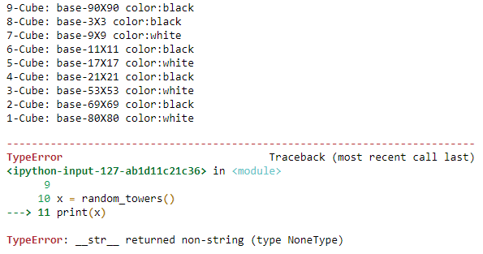

אני מעוניין להשתמש בפונקציה str , מצאתי דרך להדפיס עפ"י הסדר המבוקש, והפונקציה מדפיסה לי את כל הפירמידה אבל אני כל זאת מקבל את ההתראה הבאה:

מחיפוש קצר באינטרנט הבנתי שזה בגלל שאני השתמשתי בפעולה print במקום return, אך צריך להשתמש פה בלולאה, ואני לא אוכל להשתמש ב- return במצב כזה.
ניסיתי להשתמש גם ב- yield ולא הצלחתי לגרום לו לעבוד.
אם כך איך אני יכול לתקן את הבעיה, ואם השימוש פה ב str לא מתאים, האם פשוט להוסיף לולאה בקוד הבודק?
Yam
מה כתוב בשגיאה?
(בניסוח אחר: איפה שמת print במקום ה־return?)
DrorBiton
למזלי שמתי לב שהקוד הראשוני היה מדפיס לי בשורה הראשונה את הקוביה הכי גדולה ולאחר מכן מתחיל את הפירמידה כמו שצריך
זה הקוד שעשיתי בהתחלה:
/-
החלפתי ללולאת while וסידרתי:
/-
עכשיו ההדפסה בסדר הנכון, אך כמו שאתה רואה מהקוד ביססתי אותו על לולאה שכל פעם ידפיס לי את השורה עם המס’ המתאים, הבנתי שההתראה שקיבלתי נובעת מכך שהשתמשתי ב- print במקום return, אבל בהתחשב ש- return מסיימת לי את השימוש בפונקציה, איך אני יכול לשנות את הפונקציה str כדי שתדפיס לי בסדר המבוקש?
Yam
אין צורך לצרף קוד, הבעיה מובנת
מה שבאתי להגיד זה שהשגיאה שמוחזרת לך אינדיקטיבית מאוד – __str__ אכן חייבת להחזיר ערך, והערך הזה חייב להיות מחרוזת. חשוב איך אתה יכול להחזיר מחרוזת שתהיה תואמת למה שאתה רוצה להדפיס.
DrorBiton
קיבלתי, מצטער על הפרסום.
תודה על העזרה, מצאתי את הדרך!